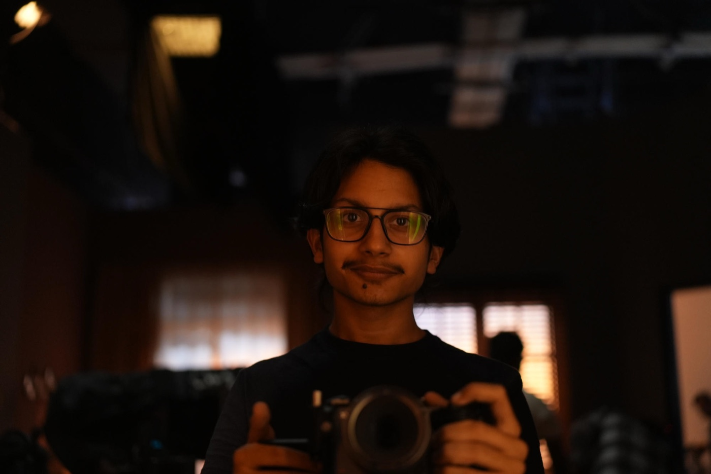
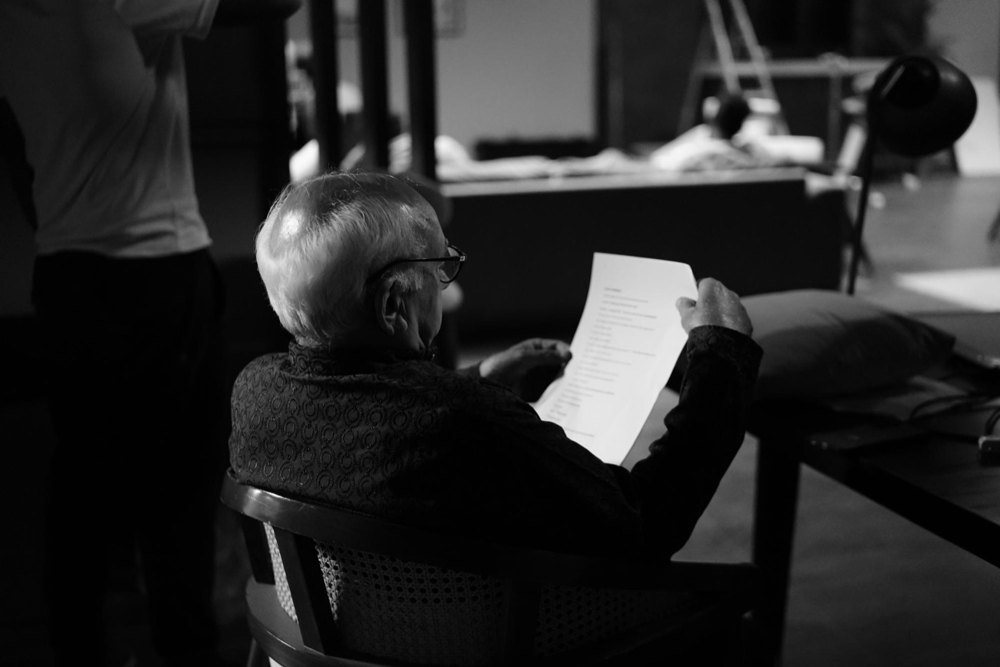
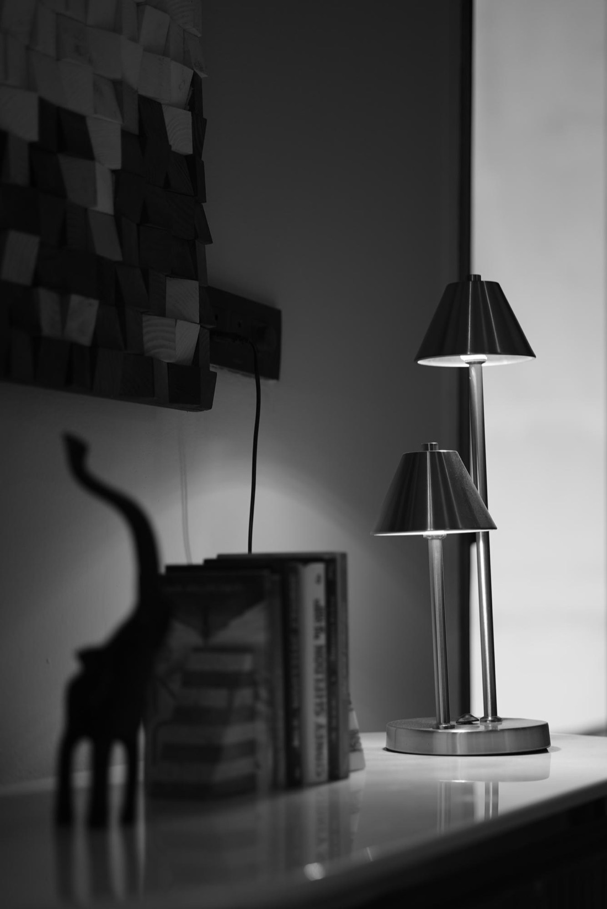
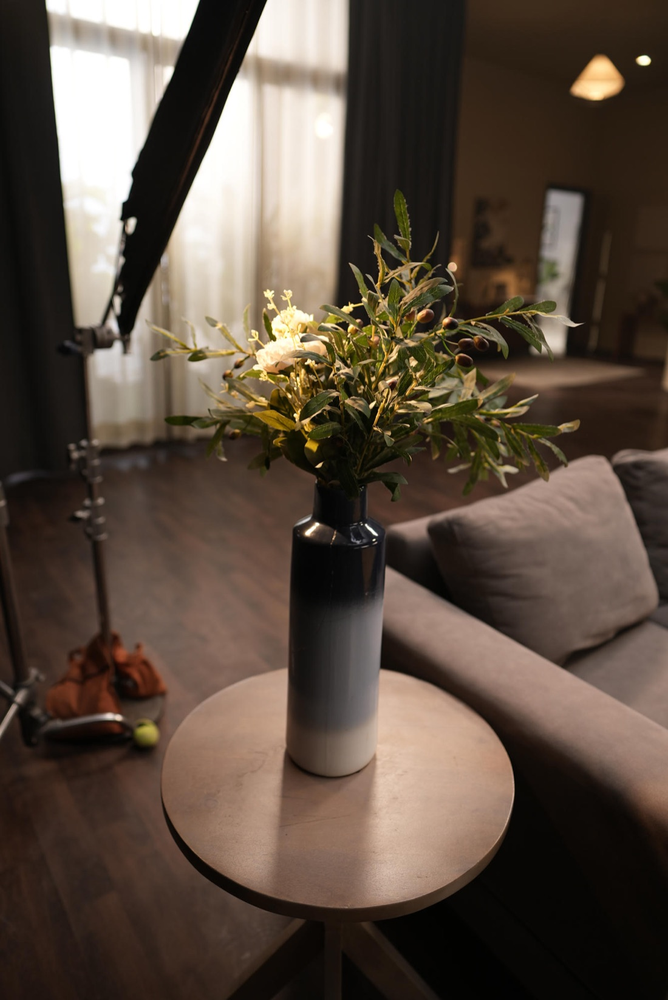
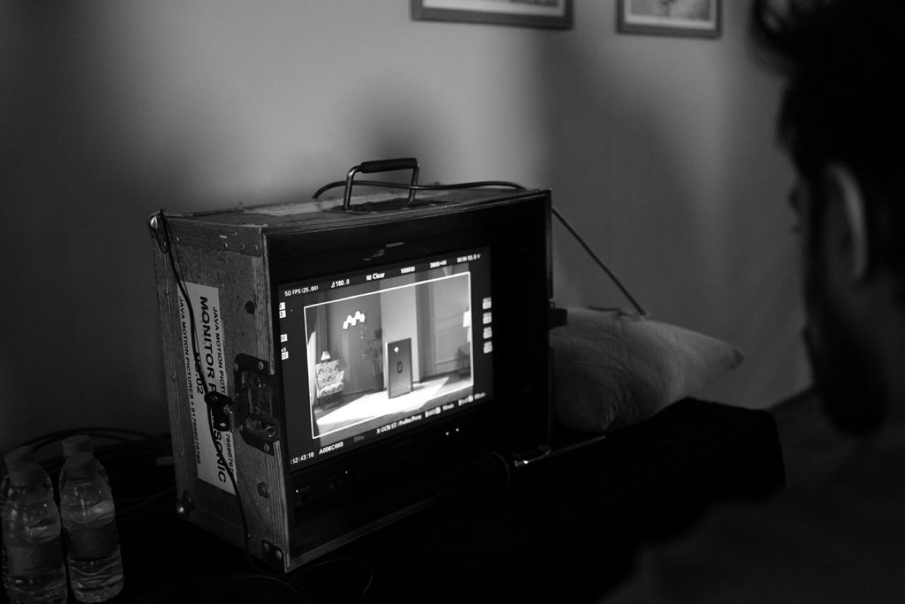
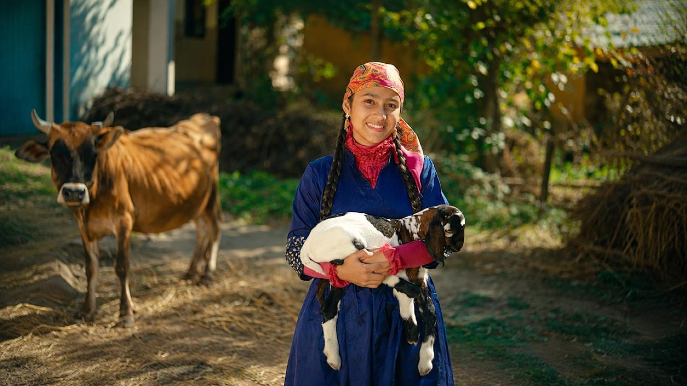
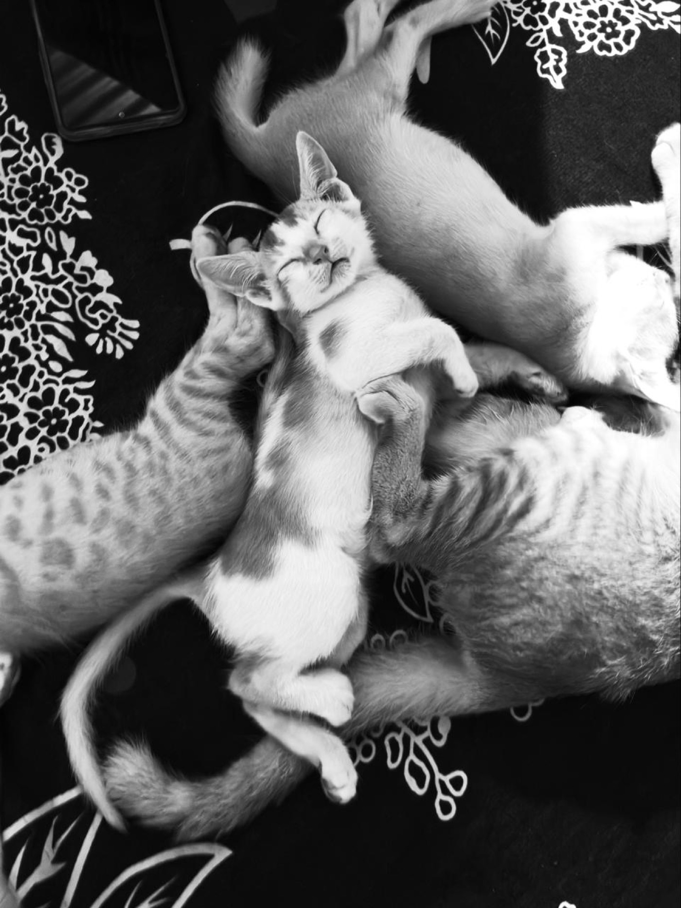
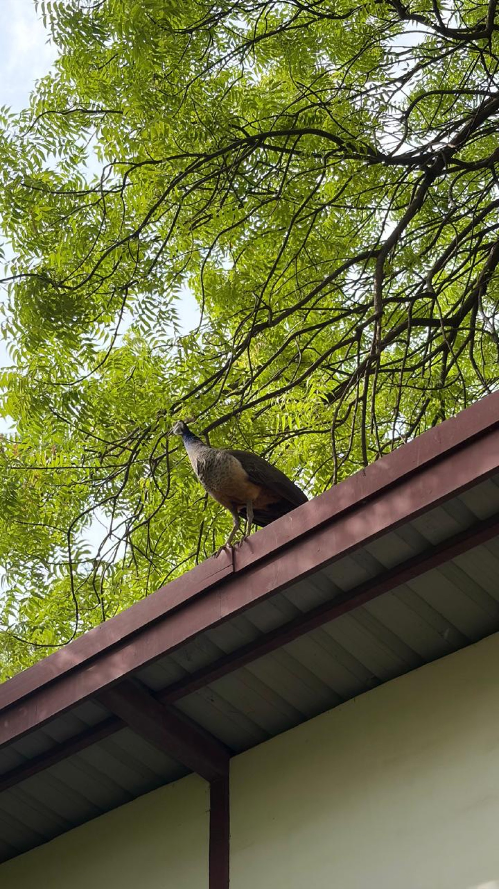
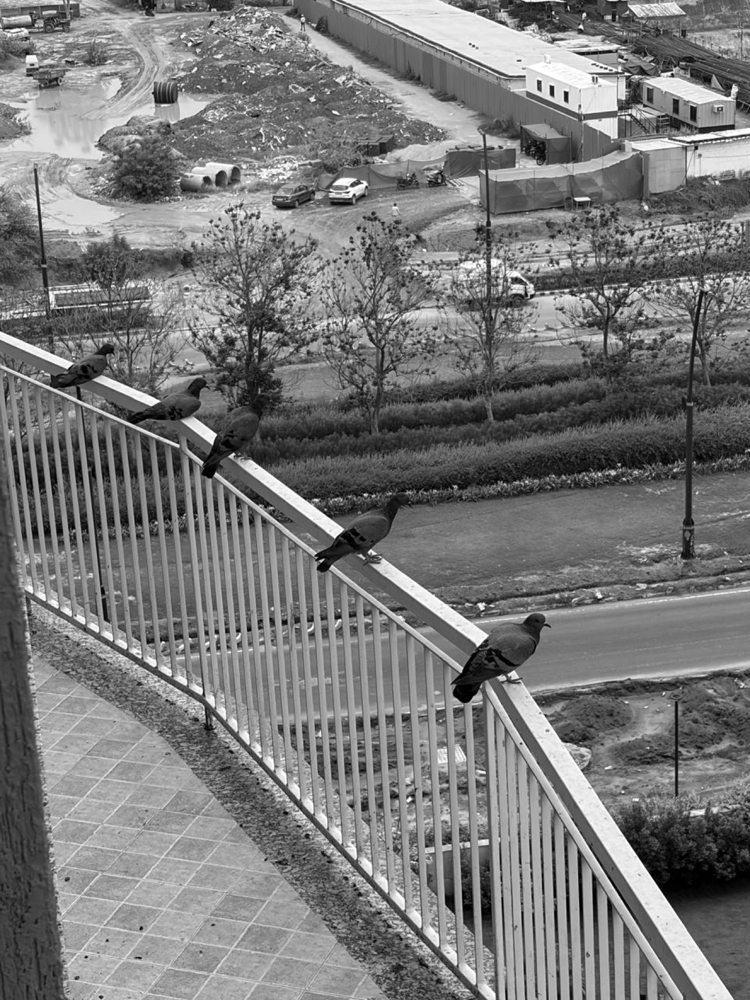

Video editing
Story-led cuts for brand films, campaigns, and visual stories.
A few recent frames
From first cut to final frame
Thoughtful post-production for films with something to say. Every detail works toward one thing: making the story land.
Story-led cuts for brand films, campaigns, and visual stories.
Animated titles, visual effects, and motion-led storytelling.
Purpose-built short-form edits with a clear hook and a strong pace.
Music, sound, and timing that give every cut its feeling.
Independent editor · Dehradun, India

I’m Vivek—a video editor and visual storyteller from Dehradun. I shape footage, sound, and timing into films that feel considered, cinematic, and human.
A little about meA few names from the credits
And the independent teams who bring every story to life.
Behind every final frame








The next story could be yours